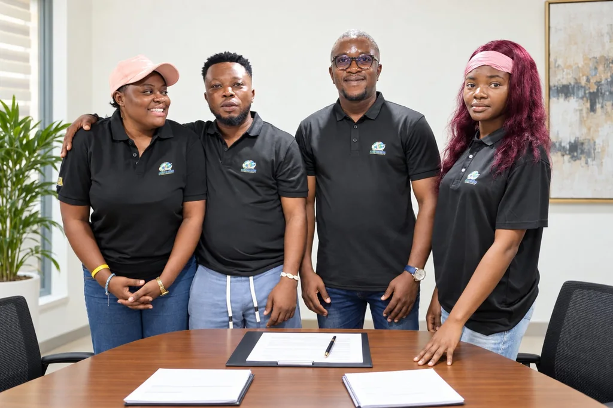

Check before you pay. Check before you travel.
A fake job abroad can cost someone their savings, and sometimes their freedom. ASMI-Cameroun is a declared Cameroonian nonprofit civil society association based in Nkongsamba. We help people verify an offer before they act, and we use anonymous data to spot scams early.
Who we are
A small Cameroonian team with a practical job.
We are based in Nkongsamba, in Moungo. We work on fake job offers, online recruitment scams and trafficking, mostly by helping people ask the right questions before they pay or travel.
We also gather anonymous field data, so we can see which scams are spreading and where. That is what Data Sentinel is for.
More about us →
Our team at the September 2026 General Assembly, Nkongsamba
What we do
Prevent. Protect. Speak up.
Prevent
Awareness sessions, simple verification checklists and scam alerts, so people can spot a bad offer early.
How to migrate safely →Protect
Referral, peer support and legal and psychosocial orientation for people caught up in exploitation.
Our approach →Speak up
We take what the data shows to institutions, civil society and partners who can act on it.
Work with us →Try it now
Got an offer? Run a quick check.
Tap anything that matches the offer you received. It won’t prove a scam, but it tells you how carefully to check before you pay or send documents.
No signals selected
Tap what you noticed to see how careful to be.
A guide, not a verdict.
Read the full guide →Data Sentinel
How we turn scattered reports into something we can act on.
Each report is cleaned, checked and added to a pattern we can read: which scams, where, aimed at whom. We publish totals, never names.
Our programme
From return to resilience.
The Safe Migration & Reintegration Network receives people coming home after trafficking and follows them for a year, and joins that to community prevention, a job-offer verification desk and Data Sentinel evidence. It is a proposal seeking funding.
Meanwhile, community contributions pay for our first prevention sessions in Moungo. The counter shows what has been confirmed so far.
A pledge counts as confirmed only once our treasurer has received the money.
Latest · 3 October 2026 · PolicyOur Executive Bureau approved our Safeguarding and Data Protection Policy. You can read it in full.
Read the policy →Want to work with us?
We’re open to partners who bring skills, equipment, research or funding. We’ll always tell you plainly where a conversation stands.